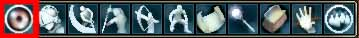
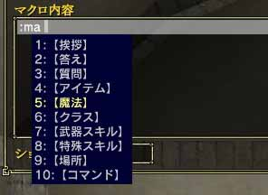
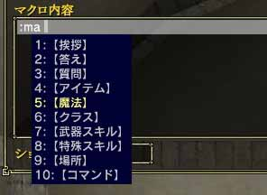

ゲームを開始したら、自分の「ホーム」からスタートします。
 
(左：ホーム 右：メニュー)

(マウスパレットの"メニューボタン")
1.武器の設定
まずメニューを開きます。マウス操作ならばマウスパレットの一番左のボタンを押し、キーボード操作ならばテンキー「+」もしくは、Altキーを押してください。そしてメニュー3ページ目にある「クラス・スキル装備」を選択します。
ウィンドウが出てくるので武器スキルを2種類を設定してください。クラスに応じて、向いている武器、逆に不向きな武器がありますので注意しましょう。不向きなものは、いくら武器スキルを上げても、武器の特殊スキルを取得できない場合があります。
2.スキルの装備
キャラクター作成で選んだスキルに応じて、クラスごと特殊スキルが2つ使える状態にあります。初期状態ではクラスの特殊スキルを装備していないので、「クラス・スキル装備」で「特殊スキル」の欄に登録しておいてください。

(左：武器スキルの欄 右：武器スキル選択画面)
 
(左：特殊スキルの欄 右：特殊スキル選択画面)
|
|

 
